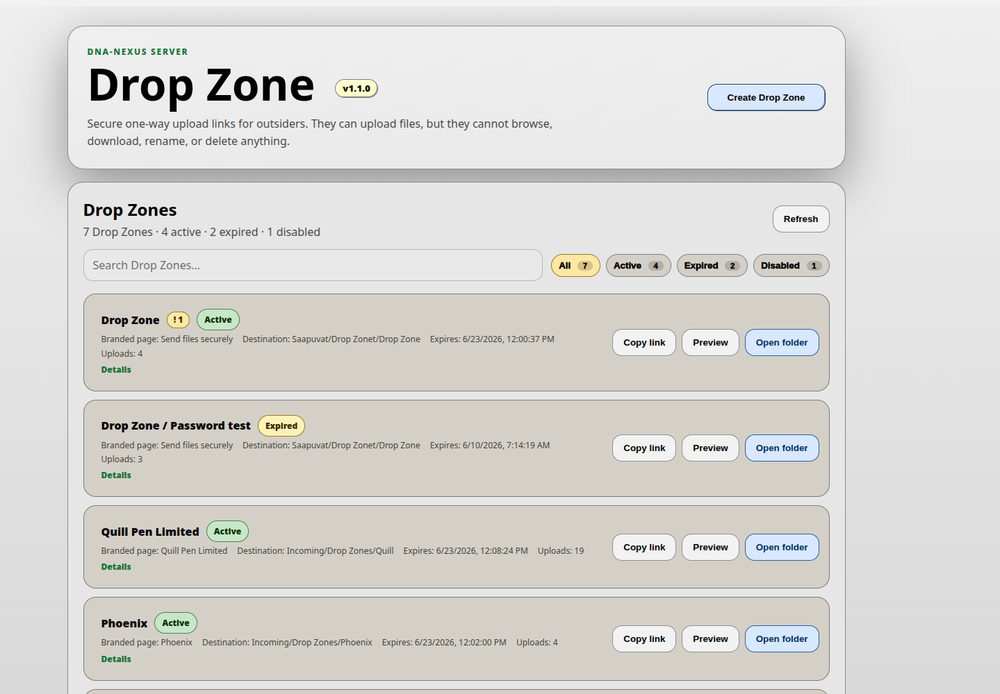
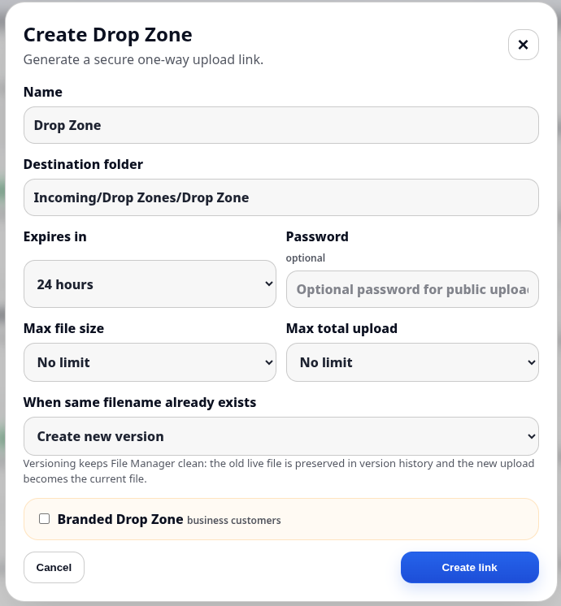
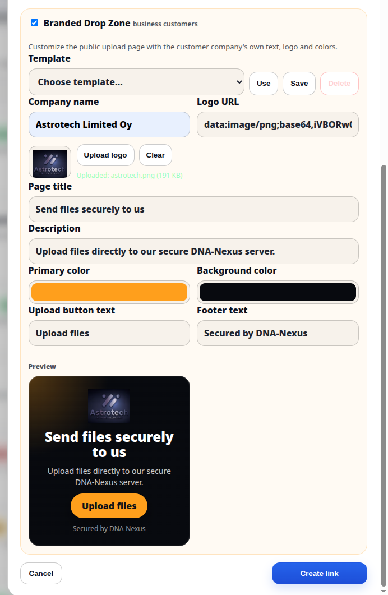
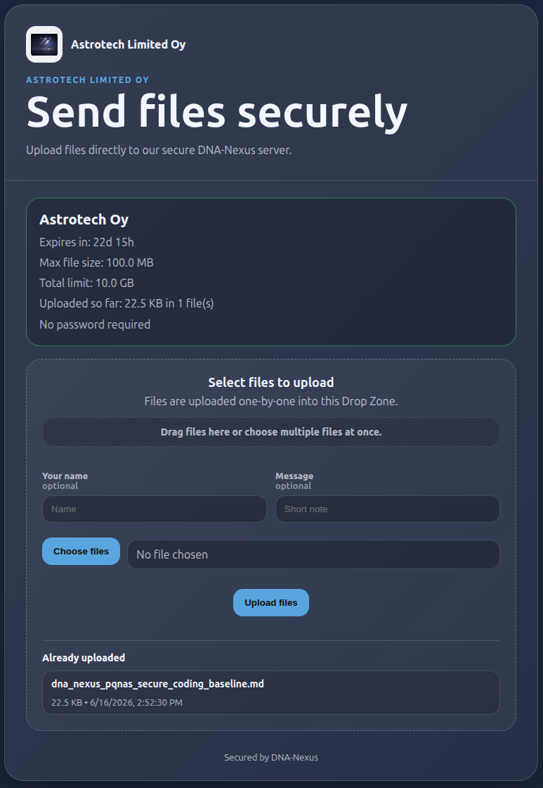
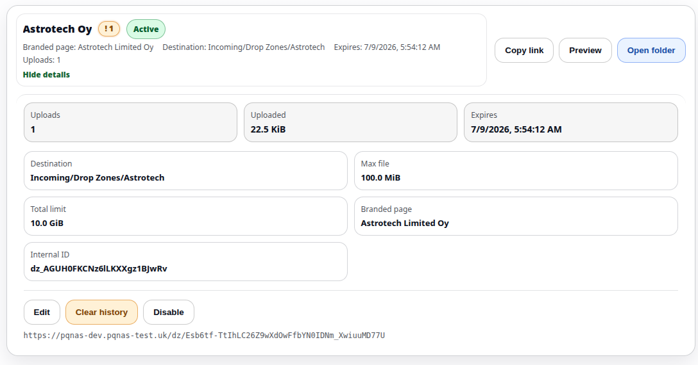

Drop Zone
Drop Zone lets users create customized one-way upload links for customers, partners or other external recipients. Files uploaded through a Drop Zone link are delivered into the creator's own DNA-Nexus file storage.

What Drop Zone does
A Drop Zone is a one-way upload page. The recipient can upload files through the link, but cannot browse the link creator's other files or folders.
Uploaded files are stored in the destination folder selected by the user who created the Drop Zone. After upload, the files can be reviewed from normal DNA-Nexus tools such as File Manager.
Creating a Drop Zone
To create a new upload link, open Drop Zone and click Create Drop Zone. The setup dialog asks for the basic upload-link settings.

The Name field is the internal Drop Zone name shown to the user who creates the link. The Destination folder defines where incoming files will be stored.
The Expires setting controls how long the upload link remains valid. A password can also be assigned to the upload page. If password protection is used, the password must be shared with the recipient separately.
Drop Zones can also define a maximum size for a single file and a maximum size for the whole upload. These limits help keep incoming uploads predictable.
The duplicate filename setting controls what happens when a file with the same name already exists in the destination. The available choices are:
- Create new version
- Keep both files — DNA-Nexus adds a suffix such as (1) to the filename
- Reject duplicate filename
Branding the upload page
If desired, the upload page can be customized to match the user's company or project branding. Branded layouts can also be saved as reusable templates for future Drop Zones.

The user can enter the company name, provide a logo URL, or upload a logo directly to the server. The upload page colors, button labels and footer text can also be customized.
All branding changes are visible in the preview. When the page looks correct, the Drop Zone link is created with the button at the bottom of the dialog.
Recipient upload page
The recipient sees a dedicated upload page. The page displays the configured branding and the upload rules, such as expiration time and upload limits.

Files can be dragged directly into the upload area or selected from the upload button. The uploaded files become visible to the link creator, but the recipient does not see the creator's other files.
After files are uploaded
When a recipient uploads files, Drop Zone shows a notification next to the Drop Zone name, for example !1.

After the files have arrived safely, the user can click Open folder to review the uploaded content in the destination folder.
After confirming that the files have been received, the user can click Clear history. This removes the notification marker from the Drop Zone list and also removes the names of already uploaded files from the recipient's upload page.
Reactivating an expired link
An expired Drop Zone link can be reactivated without creating a completely new Drop Zone. Open the existing Drop Zone card and use the renewal actions at the bottom of the card, such as Renew for 7 days or Renew for 30 days.
This is useful when the same customer or partner needs to upload files again later. The user can keep the same Drop Zone setup, destination folder, branding and limits, instead of creating a new Drop Zone for every upload round.